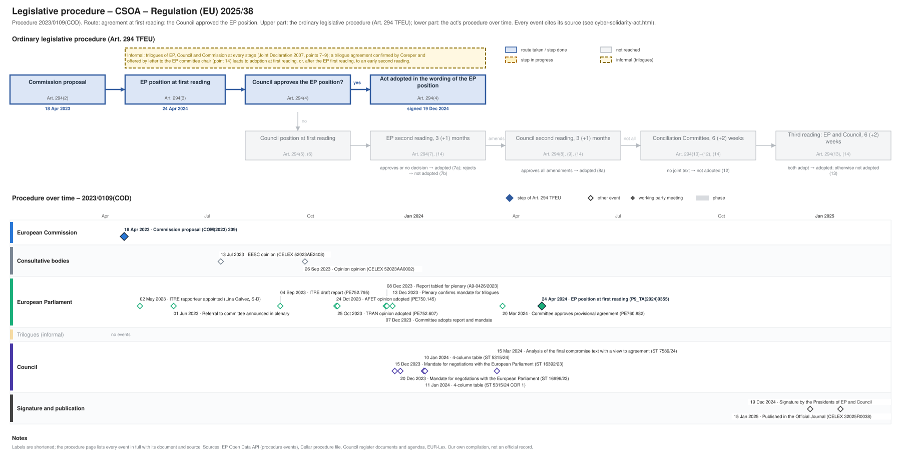

← All procedures · Regulation timeline
Procedure 2023/0109(COD), completed. Drawing: SVG · PNG · PDF (A3) · draw.io · Page as Markdown: cyber-solidarity-act.md
| Stage | Completed, published 15 Jan 2025 |
|---|---|
| Latest activity | 15 Jan 2025 · Signature and publication: Published in the Official Journal (CELEX 32025R0038) |

| Date | Actor | Event | Document | Source |
|---|---|---|---|---|
| 2023-05-02 | European Parliament | ITRE rapporteur appointed (Lina Gálvez, S-D) | EP procedure file | EP Open Data API, procedure 2023-0109 (participation RAPPORTEUR) |
| 2023-06-01 | European Parliament | Referral to committee announced in plenary | EP procedure file | EP Open Data API, procedure 2023-0109 (REFERRAL) |
| 2023-07-13 | Consultative bodies | EESC opinion | CELEX 52023AE2408 | Cellar procedure file 2023/109 |
| 2023-09-04 | European Parliament | ITRE draft report | PE752.795 | EP Open Data API, procedure 2023-0109 (COMMITTEE_TABLING_REPORT) |
| 2023-09-26 | Consultative bodies | Opinion opinion | CELEX 52023AA0002 | Cellar procedure file 2023/109 |
| 2023-10-24 | European Parliament | AFET opinion adopted | PE750.145 | EP Open Data API, procedure 2023-0109 (COMMITTEE_ADOPTING_OPINION) |
| 2023-10-25 | European Parliament | TRAN opinion adopted | PE752.607 | EP Open Data API, procedure 2023-0109 (COMMITTEE_ADOPTING_OPINION) |
| 2023-12-07 | European Parliament | Committee adopts report and mandate | EP procedure file | EP Open Data API, procedure 2023-0109 (COMMITTEE_ADOPTING_REPORT) |
| 2023-12-08 | European Parliament | Report tabled for plenary | A9-0426/2023 | EP Open Data API, procedure 2023-0109 (TABLING_PLENARY) |
| 2023-12-13 | European Parliament | Plenary confirms mandate for trilogues | EP procedure file | EP Open Data API, procedure 2023-0109 (PLENARY_ENDORSE_COMMITTEE_INTERINSTITUTIONAL_NEGOTIATIONS) |
| 2023-12-15 | Council | Mandate for negotiations with the European Parliament | ST 16392/23 | Cellar procedure file 2023/109 (Council register) |
| 2023-12-20 | Council | Mandate for negotiations with the European Parliament | ST 16996/23 | Cellar procedure file 2023/109 (Council register) |
| 2024-01-10 | Council | 4-column table | ST 5315/24 | Cellar procedure file 2023/109 (Council register) |
| 2024-01-11 | Council | 4-column table | ST 5315/24 COR 1 | Cellar procedure file 2023/109 (Council register) |
| 2024-03-15 | Council | Analysis of the final compromise text with a view to agreement | ST 7589/24 | Cellar procedure file 2023/109 (Council register) |
| 2024-03-20 | European Parliament | Committee approves provisional agreement | PE760.882 | EP Open Data API, procedure 2023-0109 (COMMITTEE_APPROVE_PROVISIONAL_AGREEMENT) |
| 2024-04-24 | European Parliament | EP position at first reading (Art. 294(3) TFEU) | P9_TA(2024)0355 | EP Open Data API, procedure 2023-0109 (PLENARY_AMEND_PROPOSAL) |
| 2024-12-19 | Signature and publication | Signature by the Presidents of EP and Council | EP procedure file | EP Open Data API, procedure 2023-0109 (SIGNATURE) |
| 2025-01-15 | Signature and publication | Published in the Official Journal | CELEX 32025R0038 · en.md de.md | EP Open Data API, procedure 2023-0109 (PUBLICATION_OFFICIAL_JOURNAL) |
| Date | Document | Kind | Subject | Text |
|---|---|---|---|---|
| 2023-07-13 | CELEX 52023AE2408 | opinion | Opinion of the European Economic and Social Committee on ‘Proposal for a Regulation of the European Parliament and of the Council amending Regulation (EU) … | – |
| 2023-07-17 | PE750.145 | ep-draft-opinion | DRAFT OPINION on the proposal for a regulation of the European Parliament and of the Council laying down measures to strengthen solidarity and capacities in … | – |
| 2023-07-24 | PE752.607 | ep-draft-opinion | DRAFT OPINION on the proposal for a regulation of the European Parliament and of the Council on Measures to strengthen solidarity and capacities in the Union … | – |
| 2023-09-04 | PE752.795 | ep-draft-report | DRAFT REPORT on the proposal for a regulation of the European Parliament and of the Council laying down measures to strengthen solidarity and capacities in the … | – |
| 2023-09-26 | CELEX 52023AA0002 | opinion | Opinion 02/2023 (pursuant to Article 322(1), TFEU) concerning the proposal for a Regulation of the European Parliament and of the Council laying down measures … | – |
| 2023-10-25 | PE752.607 | ep-opinion | OPINION on the proposal for a regulation of the European Parliament and of the Council on Measures to strengthen solidarity and capacities in the Union to … | – |
| 2023-10-27 | PE750.145 | ep-opinion | OPINION on the proposal for a regulation of the European Parliament and of the Council laying down measures to strengthen solidarity and capacities in the … | – |
| 2023-12-08 | A9-0426/2023 | ep-report | REPORT on the proposal for a regulation of the European Parliament and of the Council laying down measures to strengthen solidarity and capacities in the Union … | – |
| 2023-12-15 | ST 16392/23 | council-position | Mandate for negotiations with the European Parliament | – |
| 2023-12-20 | ST 16996/23 | council-position | Mandate for negotiations with the European Parliament | – |
| 2024-01-10 | ST 5315/24 | trilogue | 4-column table | – |
| 2024-01-11 | ST 5315/24 COR 1 | trilogue | 4-column table | – |
| 2024-03-15 | ST 7589/24 | agreed-text | Analysis of the final compromise text with a view to agreement | – |
| 2024-03-21 | PE760.882 | agreed-text | PROVISIONAL AGREEMENT RESULTING FROM INTERINSTITUTIONAL NEGOTIATIONS Proposal for a regulation laying down measures to strengthen solidarity and capacities in … | – |
| 2024-04-24 | P9_TA(2024)0355 | ep-position | Cyber Solidarity Act | – |
Unofficial Markdown conversions for reading, searching and project folders; only the official document is authentic. "Read" opens the rendered text on GitHub, where a link to a provision (#art-13, #rec-12, #annex-i) jumps to it.
| Date | Stage | Document | Markdown | Read |
|---|---|---|---|---|
| 2025-01-15 | oj | CELEX 32025R0038 | en de | GitHub |
| 2025-01-24 | corrigendum | CELEX 32025R0038R(01) | en de | GitHub |
| 2025-11-06 | corrigendum | CELEX 32025R0038R(03) | en de | GitHub |
Comitology committees of Member State representatives give opinions on draft implementing acts (Regulation (EU) No 182/2011); expert groups advise the Commission on delegated acts, guidance and implementation. Meetings and documents as published in the Comitology Register and the Register of Commission expert groups, from 2024 on.
Comitology committee C70600, CNECT; examination procedure (Art. 5, 6 and 7 of Regulation (EU) No 182/2011).